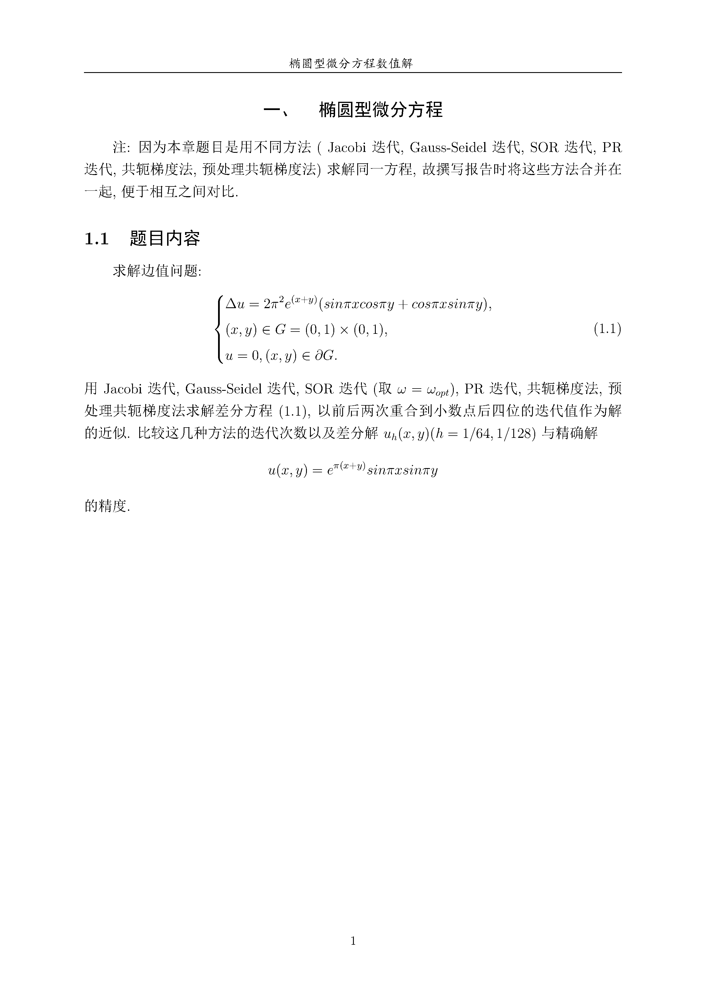
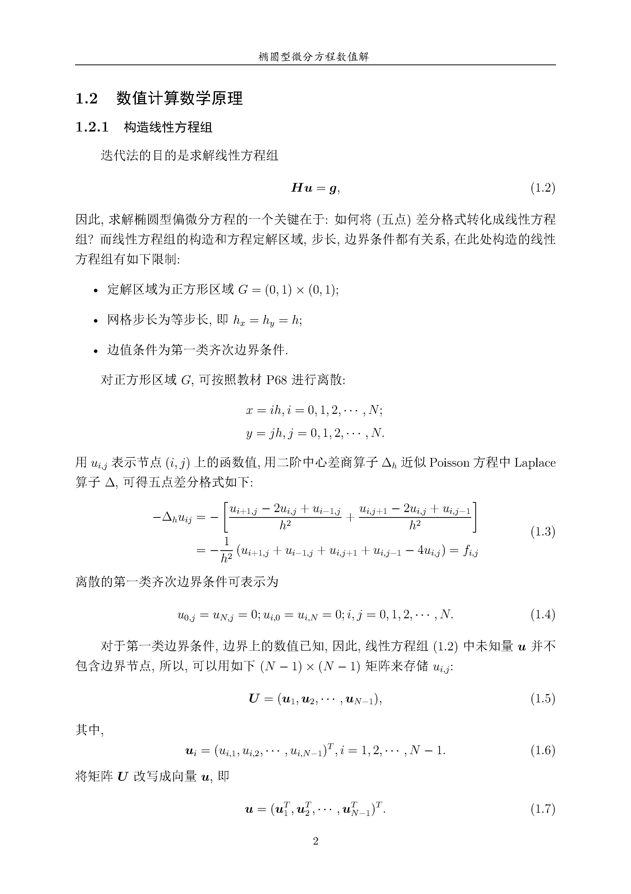
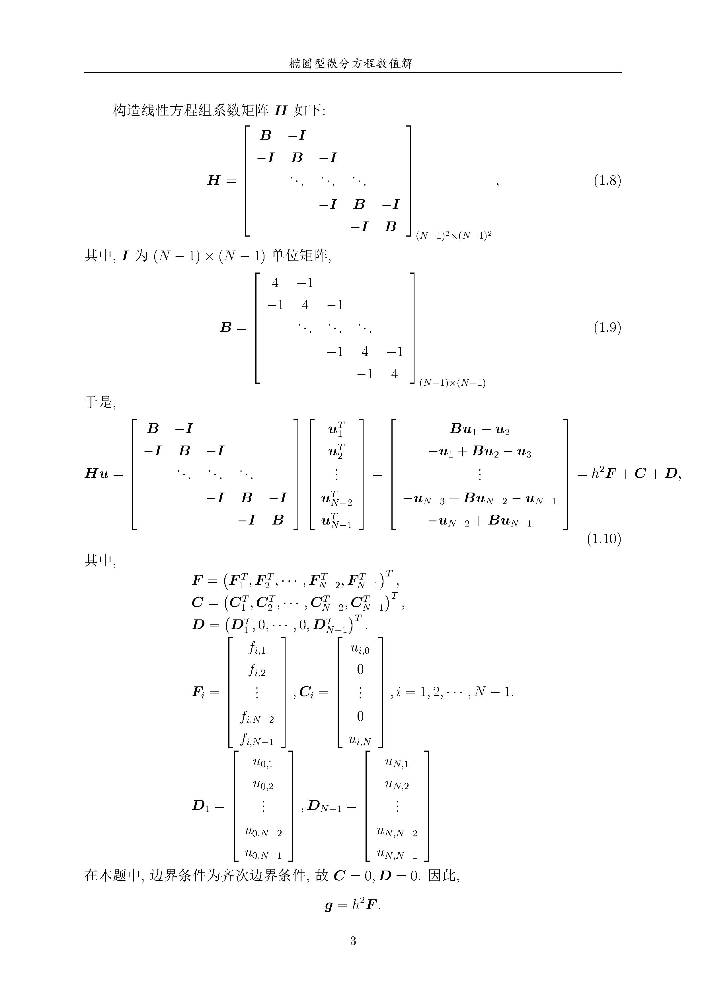
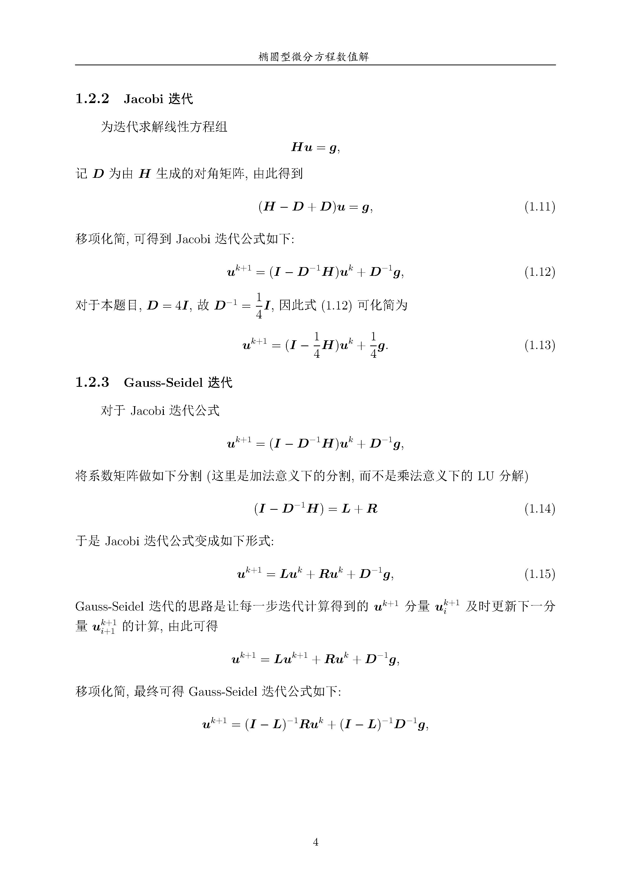
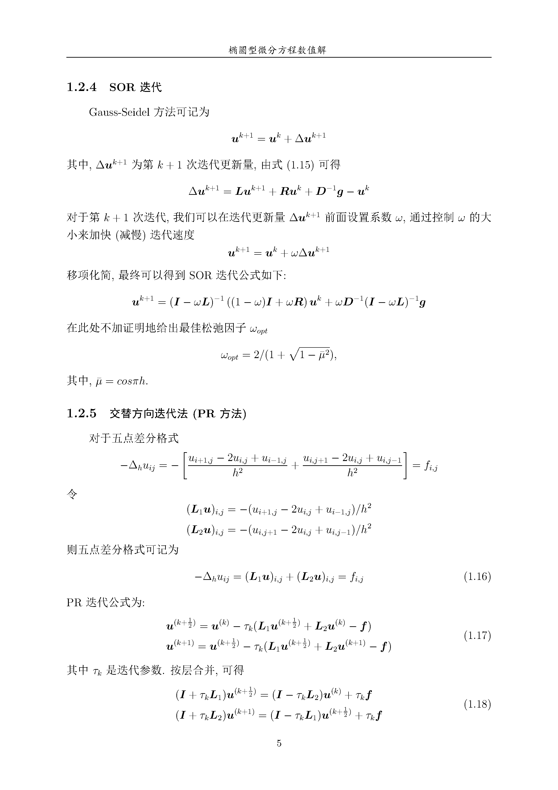
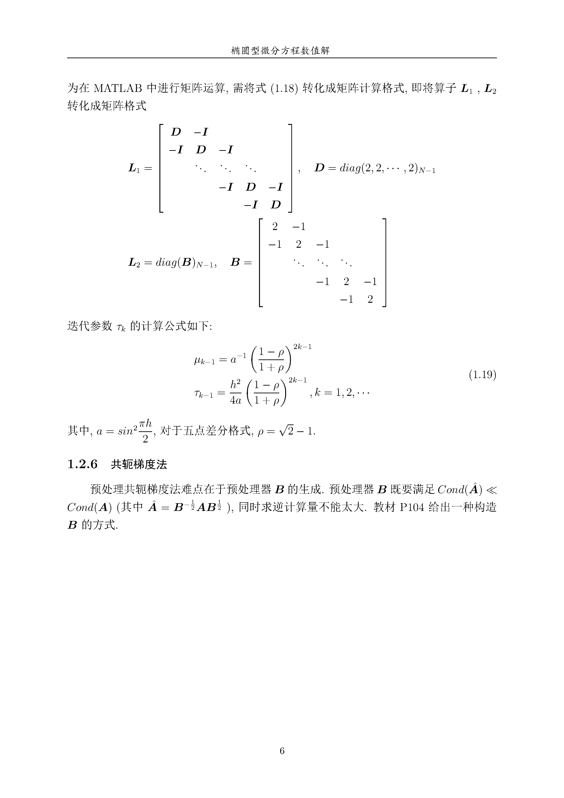
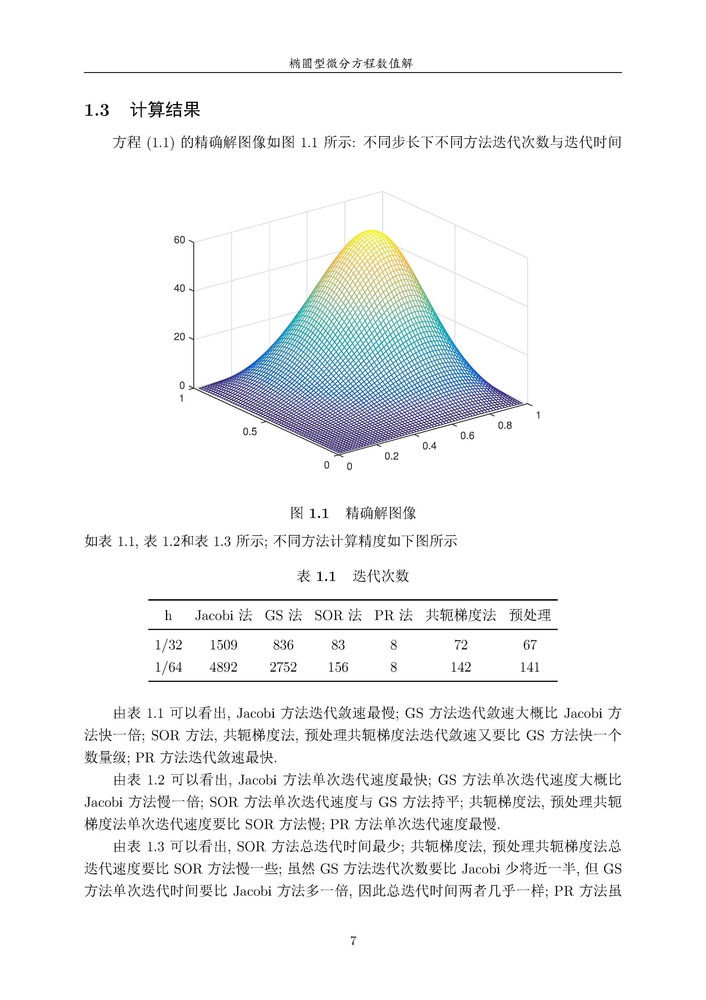
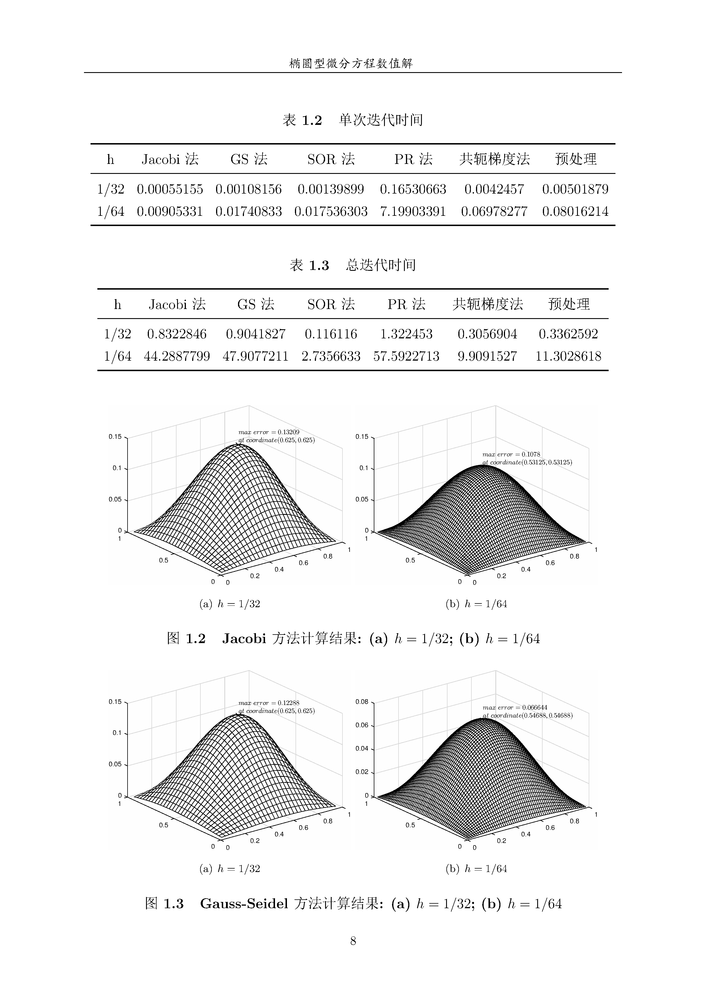
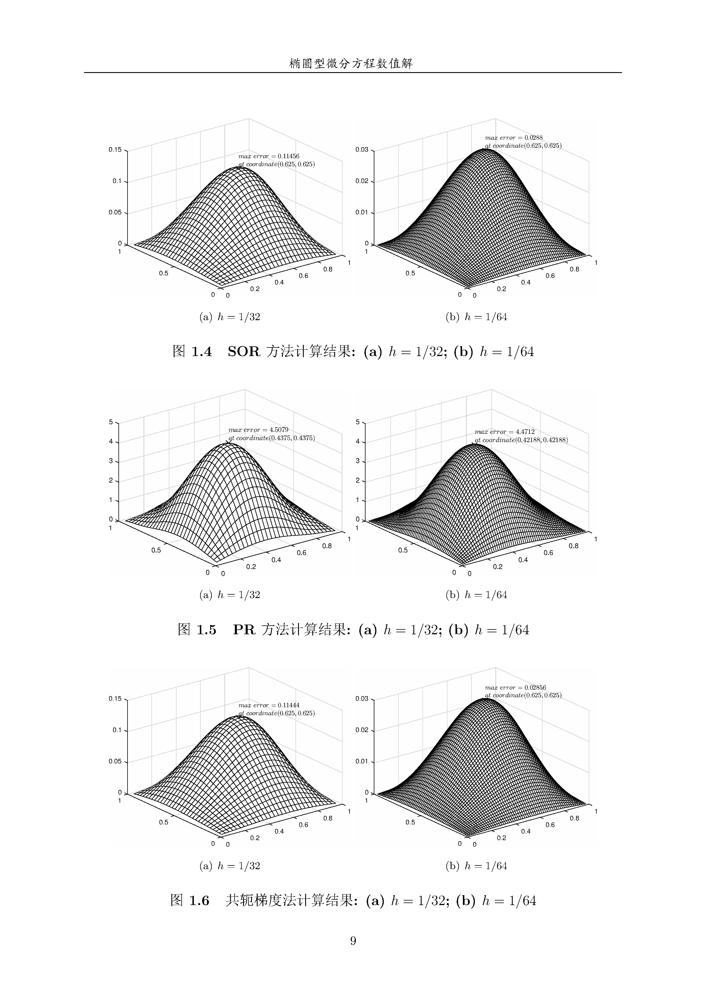
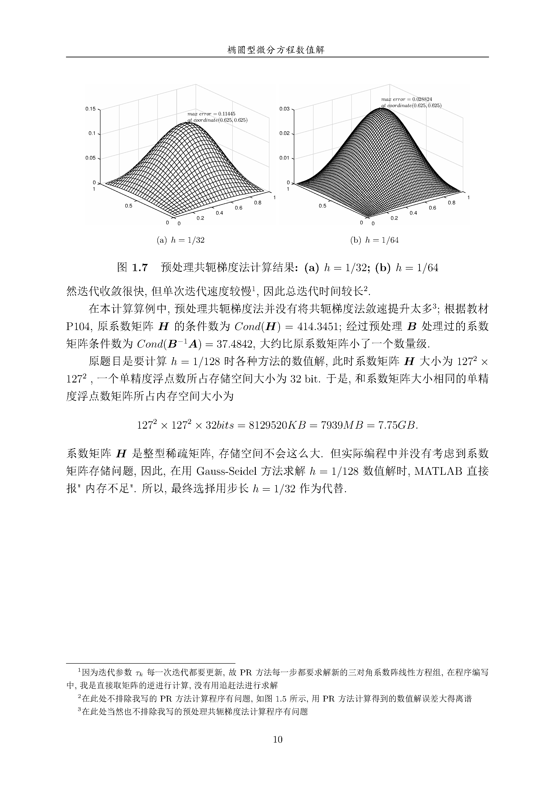

问题描述

理论推导





结果分析




附录 MATLAB 代码
运行环境：MATLAB R2016a, Intel(R) Core(TM)i7-7500U CPU@2.70GHz 单核, 8GB内存
主程序
1 | %% 不同迭代方法求解椭圆形方程 |
Jacobi 方法(包含数据存储)
1 | function [ UJacobi, EJacobi ] = Jacobi( H, g, U_A, X, Y, N, maxN, h ) |
Gauss-Seidel 方法
1 | function [ UGS, EGS ] = GS( H, g, U_A, X, Y, N, maxN, h ) |
SOR 方法
1 | %% 迭代计算 |
PR 方法
1 | function [ UPR, EPR ] = PR( L1, L2, g, U_A, X, Y, N, maxN, h ) |
共轭梯度法
1 | function [ UCG, ECG ] = CG( H, g, U_A, X, Y, N, maxN, h ) |
预处理共轭梯度法
1 | function [ UPCG, EPCG ] = PCG( H, g, invB, U_A, X, Y, N, maxN, h ) |